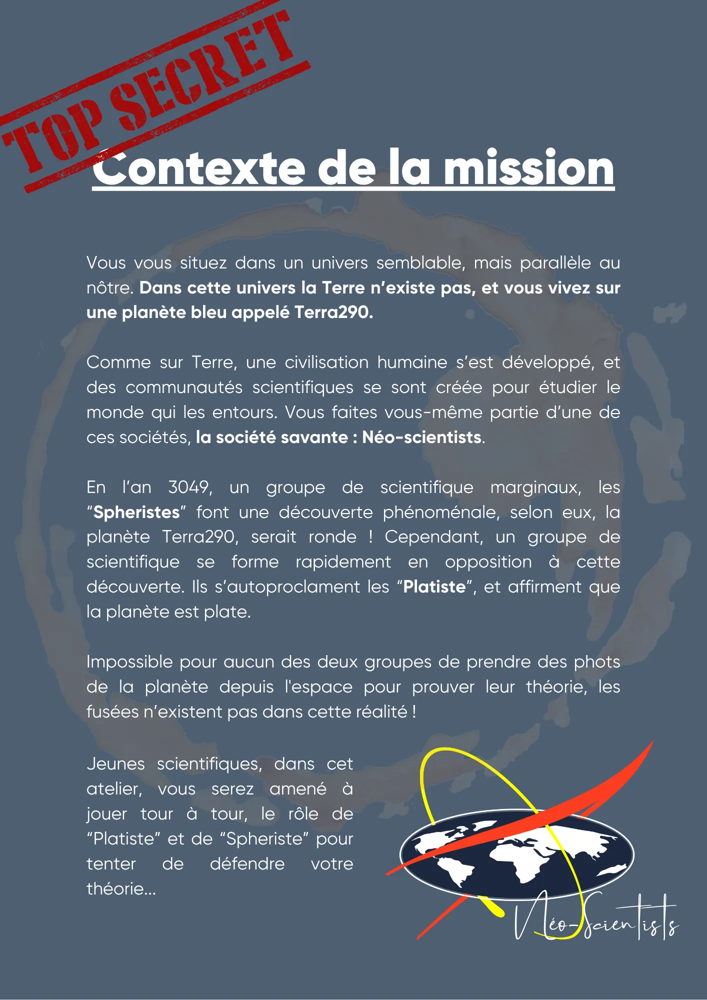
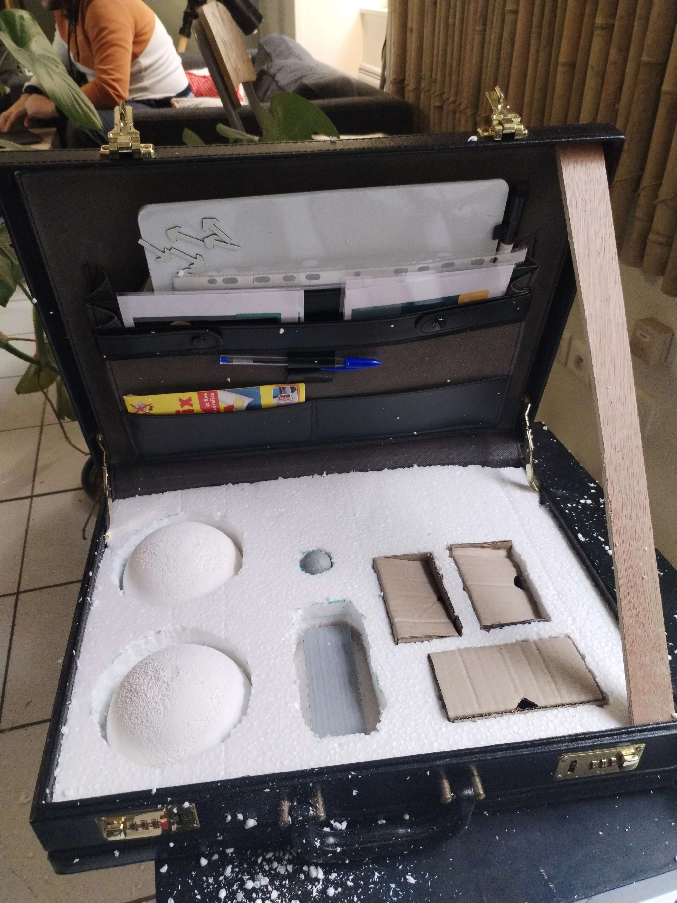

Projet · Février 2025 - En cours
Malette du petit sceptique
La mallette du petit sceptique est un serious game. Le but de l'animation est d'appliquer la méthode scientifique à la théorie de la Terre plate.

01
Contexte & Objectifs du projet
La mallette du petit sceptique est un projet développé par l'association AurorAlpes. Je suis intervenu après la création de l'animation pour développer l'aspect "Serious game" ainsi que l'aspect visuel de l'animation.
02
Rôle & Responsabilités
Développement du scénario du serious game
- Rédaction de fiche d'animation
Introduction

🧰 Développement de l'aspect visuel de l'animation
- Découpage d'une mallette avec @emy_crayonne
Détails

💬 Animation de l'atelier